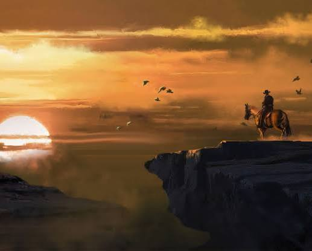
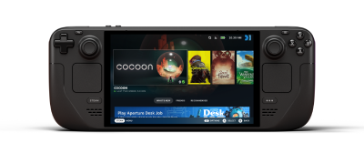

Gaming
Jag har ett brett bibliotek av spel, simulatorer, strategispel, överlevnadsspel med mera. Jag började spela tidigt och har förutom datorspel också spelat på Play Station och Xbox, men har fått mer intresse för PC-spel. På senare år har jag och min sambo spelat mycket tillsammans, vi brukade spela Counter Strike: Global Offensive, men efter att det blev uppdaterat till Counter Strike 2 har vi nästan gett upp på det spelet. Vi brukar numera främst spela överlevnadsspel med öppen värld, såsom Ark: Survival Evolved men också Minecraft. Spelar jag själv föredrar jag däremot ofta strategispel eller simultorspel, såsom Age of Empires, the Sims, Planet zoo och på senaste tiden har jag börjat spela Megastore simulator, mest för att det är så lätt att bara spara och avsluta om jag måste göra något annat. Samtidigt får jag inte glömma bort mitt absoluta favoritspel, som är Red Dead Redemption både 1 och 2, som jag har spelat många år. Båda har jag spelat på både konsol och PC, och jag har svårt att välja vilket jag tycker bäst om. Det är mitt favoritspel främst på grund av att jag är så hästintresserad och älskar western-temat. Både ettan och tvåan har jättebra storylines och helt magiska världar att utforska, jag har spenderat många timmar på att bara rida runt i spelet och njuta av landskapet. Av samma skapare gillar jag även Grand Theft Auto 5, och längtar till att få spela Grand Theft Auto 6 när det släpps. Hur cool är inte deras sida, Grand Theft Auto 6, mitt mål när utbildningen är slut är att i alla fall kunna förstå och kanske skapa en sådan webbsida. Nedan har jag gjort en tabell över mina favoritspel och ger de poäng där 1/10 är dåligt och 10/10 är bäst.
| Spel | Genre | Utgivare | Rank |
|---|---|---|---|
| Red Dead Redemption 2 | Action, Äventyr | Rockstar Games | 10/10 |
| Red Dead Redemption 1 | Action, Äventyr | Rockstar Games | 9/10 |
| Age of Empires IV | Strategi | Relic Entertainment | 8/10 |
| The Sims 4 | Simulering | Maxis | 7/10 |
| Grand Theft Auto V | Action, Äventyr | Rockstar Games | 6/10 |

Steam Deck
Jag har nyligen köpt en Steam Deck, som är en handhållen konsol som har tillgång till biblioteket på Steam. Jag har inte hunnit spela så mycket på den än, men jag ser fram emot att kunna sätta mig i soffan och spela på den på kvällarna. Det sägs även att det går att komma åt EA, Epic Games Store och andra plattformar via den så jag hoppas att detta är sant. Valet till det här köpet var främst för att jag vill kunna spela något utan att behöva starta upp datorn. Det ska vara enkelt och smidigt att kunna spela men det slår så klart inte en riktig dator.